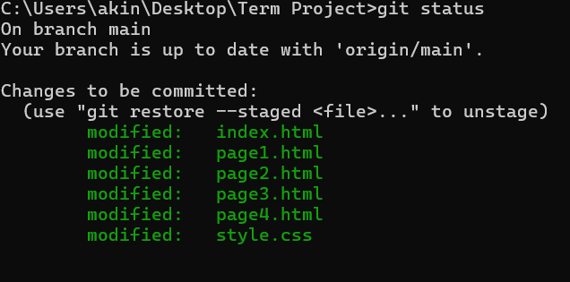

Stage Aşaması
Bu aşamada üzerinde çalışılan yazılımda belirli bir ilerleme gerçekleştirildiğinde kaydedilmesi gerekebilir.
Öncelikle değişime uğramış dosyalar git add [isim] komutuyla kayıt için eklenir. İsim kısmına kısaca "." yazılarak tüm dosyalar eklenebilir. Dosya silme, güncelleme ve ekleme işlemlerinde kullanılır.
Ekleme işlemleri bittiğinde nelerin eklendiği git status komutuyla görülebilir.

git status komutunun çıktısı
Eğer bir dosya stage aşamasından silinmek istenirse git reset [dosya] komutu kullanılır.
Commit
Stage aşaması bittiğinde artık kayıt için hazır halde olan sürüm git commit -m "Değişimlerin Özeti..." komutuyla kaydedilebilir.